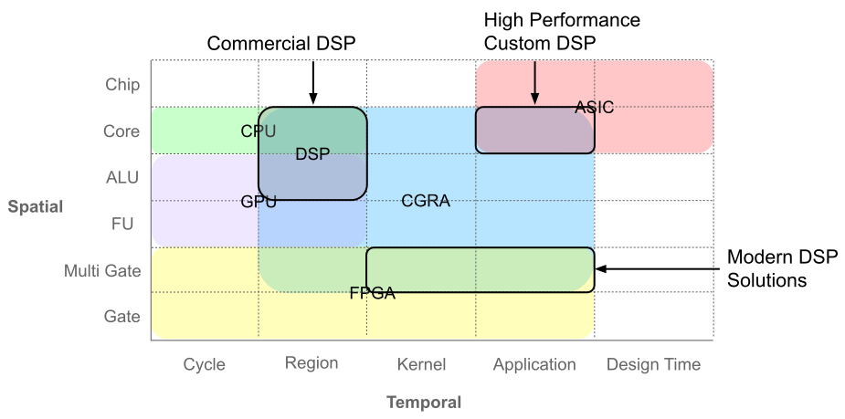
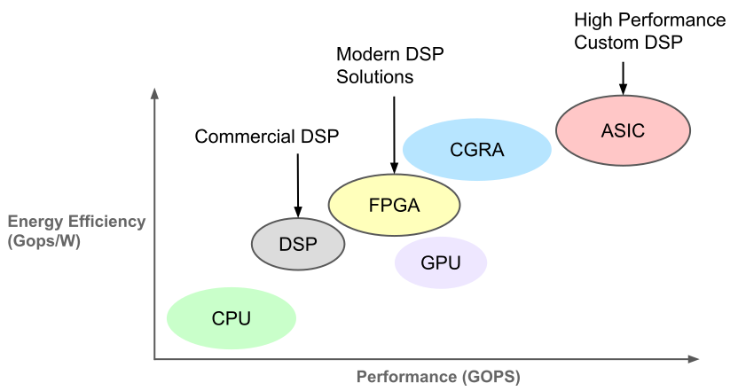
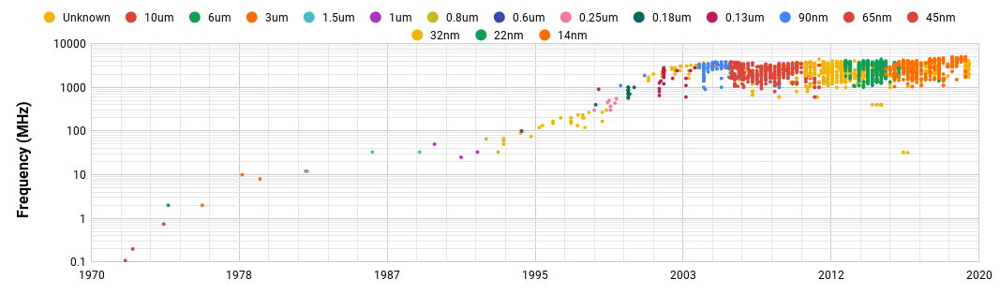
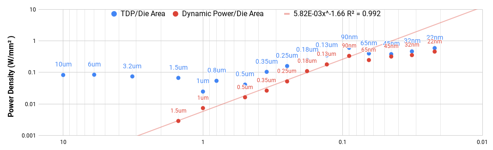
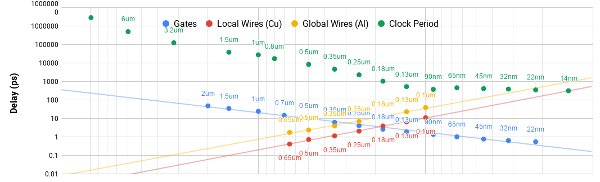
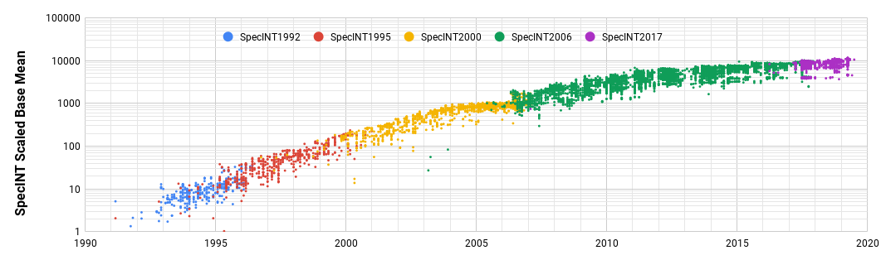
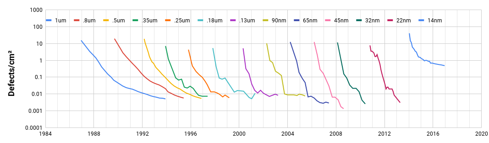
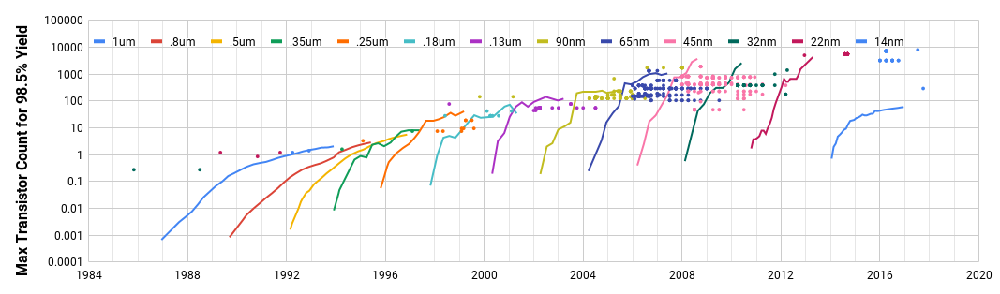

We are preparing for the alpha release of a toolset for asynchronous circuit
design. Our previously named Haystack has been renamed to Loom. Loom now
integrates the Floret flow as well, and we're in the process of tying the two
flows together to allow for end-to-end synthesis. We have pivoted our full
attention to Loom with the end goal of making the final chip design much
easier. Tooling really makes all the difference. All of this comes with a
website redesign putting that alpha release front and center.
Months of Progress
Ned Bingham
Today we have a few updates. Since our last post, we have developed an
automated cell layout engine called Floret. It is targeted at Skywater's 130nm process
technology node and produces mostly DRC clean layouts. Further, we have
deployed an updated website that makes our whitepaper accessible and puts our
EDA tooling work front and center. Finally, we have have prepared to offer our
self-timed circuit course again this summer and posted it on our main page.
Over the next few weeks, we will be preparing Haystack and Floret for further
development, then we start diving into circuit design!
Introduction to Self Timed Circuits
Ned Bingham
We have completed our Introduction to Self Timed Circuits course. There are
24 lectures split into 4 modules: Fundamentals, Templated Synthesis, Formal
Synthesis, and Advanced Topics. Each lecture includes a walkthrough, working
with real circuits in the ACT
language with Skywater's
130nm process technology node. All of the lectures have been recorded and
made publicly available in our Courses page.
Signal Processing Architecture Trends
Ned Bingham
Since the 1960s, three distinct architectures have been used to accelerate
computational tasks for DSP systems: Microprocessors, Field Programmable Gate
Arrays (FPGA), and Coarse Grained Reconfigurable Arrays (CGRA), all with
variations optimizing the problem domain with specialization , parallelism , and
configurability .

Classification of architectures for Digital Signal Processing .
Early DSP history was myopically focused on specialization in Microprocessor
architectures primarily due to limited area on die . The first single-chip DSP, the TMC 0280, was
developed in 1978 with a dedicated multiply accumulate (MAC) unit , and dedicated complex operators are a mainstay of DSP
architectures to this day. The TMS 32010 adopted the Harvard Architecture in
1982 to satisfy intensive IO bandwidth requirements , and
numerous variations appeared shortly thereafter . The
DSP 32 added floating point arithmetic to deal with data scaling issues in 1984
, and the DSP 56001 found a better solution in 1987
with saturating fixed-point arithmetic on a wide datapath . The DSP 32 also added register indirect addressing
modes to compress memory addresses in the instruction words, and the DSP 56001
implemented circular buffers in memory to optimize delay computations.
With shrinking process technology nodes yielding more transistors on die,
DSP architectures shifted focus toward parallelism . The
TMS320C20 had a pipelined datapath to target data parallelism in 1993 . In 1996, the TMS320C8x added multiple cores to optimize
task parallelism . Then in 1997, the DSP16xxx
introduced a two lane pipelined Very Long Instruction Word (VLIW) architecture
.
In the 2000s, the DSP market saw a fundamental shift. First, Intel
introduced DSP extensions for their general purpose processors targeting
non-embedded applications in 1999 . Second, Xilinx
introduced FPGAs to the DSP market with the development of the Xilinx Virtex-II
targeting embedded high-performance applications in 2001 . While difficult to program, FPGAs are much more
flexible, have orders of magnitude better performance and energy consumption,
and may be reconfigured in the field. As a result, specialized microprocessor
DSP architectures were relegated to embedded low-performance problem domains.
Since then, FPGA innovations have focused on application specific operator
integration and network optimization , ease of use
, embedded and non-embedded system integration , and run-time and partial reconfigurability .

Performance of architectures for Digital Signal Processing .
While the dominance of FPGAs has demonstrated that array architectures are
the right solution for the problem domain, CGRAs show the potential for
significant improvements across the board .
Historically, bit-parallel CGRAs have extremely limited capacity due to routing
resource requirements. Digit-serial CGRAs solve the capacity issues by
reducing the width of the datapath. However, they also sacrifice
configurability in the face of complex timing and control requirements. This
has led to a variety of systolic array architectures that accelerate extremely
specific computational tasks. However, solving these configurability issues
could open the door to a diverse set of new capabilities on mobile
platforms.
The concepts introduced by Von Neumann in 1945 ,
remain the centerpiece of computer architectures to this day. His programmable
model for general purpose compute combined with a relentless march toward
increasingly efficient devices cultivated significant long-term advancement in
the performance and power-efficiency of general-purpose computers. For a long
time, chip area was the limiting factor and raw instruction throughput was the
goal, leaving energy largely ignored. However, technology scaling has
demonstrated diminishing returns, and the technology landscape has shifted
quite a bit over the last 15 years.
Around 2007, three things happened. First, Apple released the iPhone opening
a new industry for mobile devices with limited access to power. Second, chips
produced with technology nodes following Intel's 90nm process ceased scaling
frequency () as the power density collided
with the limitations of air-cooling (). For the
first time in the industry, a chip could not possibly run all transistors at
full throughput without exceeding the thermal limits imposed by standard
cooling technology. By 2011, up to 80% of transistors had to remain off at any
given time .
History of the clock frequency of Intel's processors.History of the power density in Intel's processors. Frequency, Thermal
Design Point (TDP), and Die Area were
scraped for all Intel processors. Frequency and TDP/Die Area were then averaged over all processors in each
technology. Switching Energy was roughly estimated from and and combined with Frequency
and Die Area to compute Power Density.
Third, the growth in wire delay relative to frequency introduced new
difficulties in clock distribution. Specifically, around the introduction of
the 90nm process, global wire delay was just long enough relative to the clock
period to prevent reliable distribution across the whole chip ().
Wire and Gate Delay across process technology nodes. These were
roughly estimated from and
As a result of these factors, the throughput of sequential programs
stopped scaling after 2005 (). The industry adapted,
turning its focus toward parallelism. In 2006, Intel's Spec Benchmark
scores jump by a 135% with the transtion from NetBurst to the Core
microarchitecture, dropping the base clock speed to optimize energy and
doubling the width of the issue queue from two to four, targeting Instruction
Level Parallelism (ILP)
instead of raw execution speed of sequential operations . Afterward, performance grows steadily as
architectures continue to optimize for ILP. While Spec2000 focused on
sequential tasks, Spec2006 introduced more parallel tasks .
History of SpecINT base mean, with benchmarks scaled appropriately .
By 2012, Intel had pushed most other competitors out of the Desktop CPU market, and chips following Intel's
32nm process ceased scaling total transistor counts. While smaller feature
sizes supported higher transistor density, it also brought higher defect
density () causing yield losses that make
larger chips significantly more expensive ().
History of Intel process technology defect density. Intel's defect
density trends were very roughly estimated from and .History of transistor count in Intel chips. Transistor density
was averaged over all Intel processors developed in each
technology.
Today, energy has superceded area as the limiting factor and architects must
balance throughput against energy per operation. Furthermore, improvements in
parallel programs have slowed due to a combination of factors (). First, all available parallelism has already been
exploited for many applications. Second, limitations in power density and
device counts have put an upper bound on the amount of computations that can be
performed at any given time. And third, memory bandwidth has lagged behind
compute throughput, introducing a bottleneck that limits the amount of data
that can be communicated at any given time () .